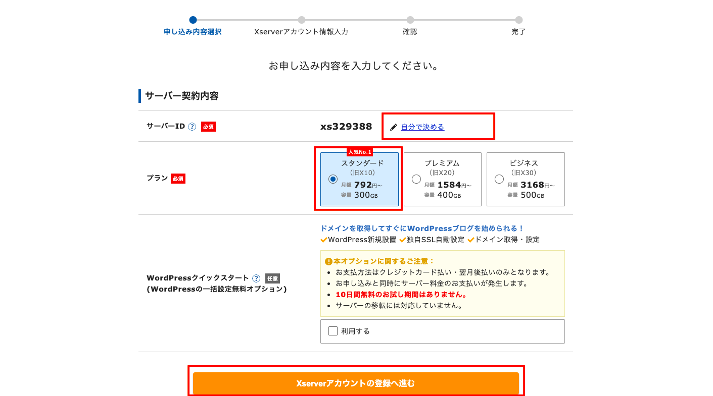
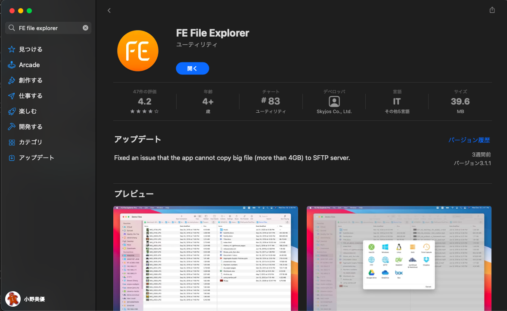
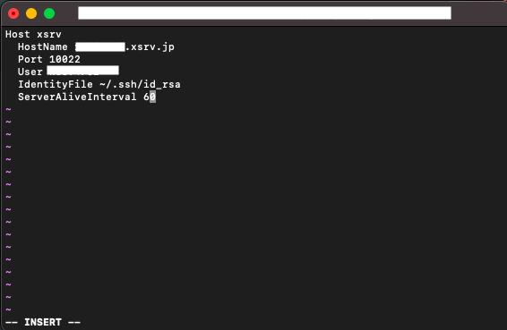
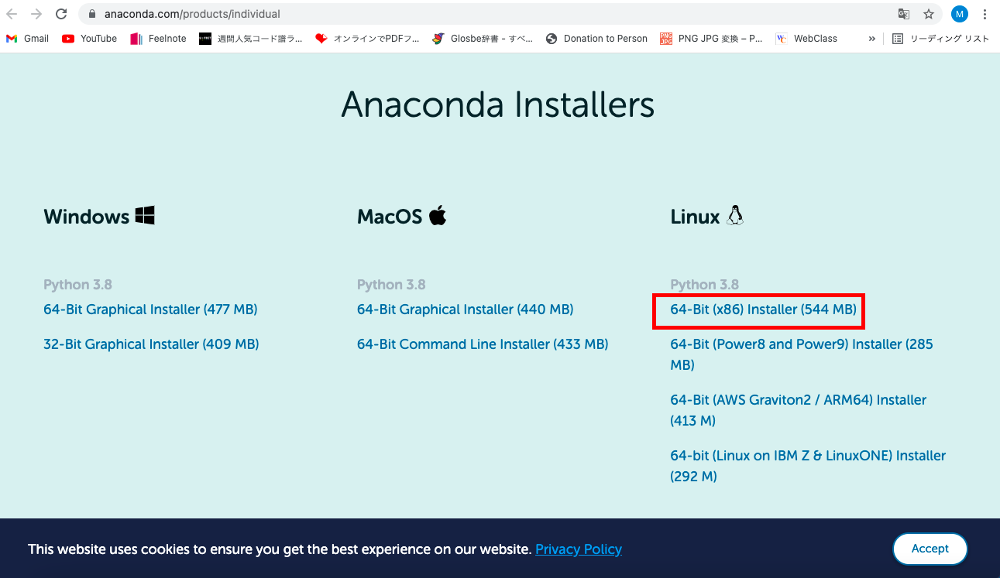

herokuからxserverにチェンジ！
2021/10/7
前回からherokuのデータベースにデータを追加するところでエラーが出ている。
そこで、herokuのサービスを諦めて新しくレンタルサーバを利用することにする�。
使うレンタルサーバは Xserverです。
今回は、xserverの環境構築とデータベース管理のやり方をまとめる。
①xserverでアカウント作成
こちらからアカウント登録を始める。
サーバIDは自分で決めてください。今回はプランはスタンダードで進みました。WordPressは使わない。

そのあとは、アカウント登録。そのまま進んで！
②ssh設定
サーバーパネルに移動。アカウントの中にあるSSH設定を開きonにする。
公開認証用鍵ペアの生成をする。パスフレーズは自分できめる。
秘密鍵を生成して自分のパソコンにダウンロードする。
③ドメイン設定
サーバパネルに移動。ドメインの中のドメイン設定を選択。ドメイン設定追加で、任意のドメイン名を選択して進む。
④FE File explorer を App Storeから インストール

有料版と無料版がある。有料版は複数のサーバにアクセスできる。今回は無料版で進める。
FEを開いて右上の設定→serverを選択。usernameにサーバーID、passwordを入力。ロケーションは任意の場所に選択。
⑤ターミナルでのssh接続を行う。
参考にしたページは こちら
先ほどダウンロードしたssh接続のkeyを新しいディレクトリを作成し移動する。
mkdir ~/.ssh
mv ~/Downloads/sample.key ~/.ssh/
秘密鍵の名前を変更する。任意の名前で大丈夫。今回は、id_rsa
cd ~/.ssh
mv sample.key id_rsa
.sshディレクトリと秘密鍵のパーミッションを変更する。
chmod 700 ~/.ssh
chmod 600 ~/.ssh/id_rsa
ログインする
ssh -l サーバーID -i 秘密鍵ファイル名(id_rsa) サーバーID.xsrv.jp -p 10022
#パスフレーズを求められるので入力しEnter。
Enter passphrase for key 'id_rsa':🔑
⑥ssh接続の簡略化
いちいち上記の長いコマンドを使用して接続するのは面倒なので、これを簡略化する
ターミナルでviコマンドを使う。
viとはLinuxのテキストを編集するときに使うソフトウェアである。
viの基本的な使い方は下記の通りである。
#viを開くとき
vi ~/.zshrc
#viに書き込見たいとき(インサートモード)
i
#viを保存して終わるとき
escキー→Wキー(上書きする場合)→Qキー(quitのQ終わるとき)→Enter
viでonfigファイルを編集する。
vi ~/.ssh/config
viを開いてインサートモードにする。(開いた画面でiを押す。)
下記の写真の通り記入する。白い部分は、自分のサーバーIDを入れる。

記入し終えたら、viを保存して終わる。やり方は上に記載してあるので参考に。
これで、ssh接続したい時は、ターミナルを開いてxserverと打ち、パスフレーズを入れるだけで接続できる。
⑦Linux版のAnacondaをダウンロードし、xserverにアップロード
参考にしたページは こちら
pyenvでインストールすることができなかった。Linuxbrewもうまくインストールできなかったので、
Anaconda公式サイトからLinux用のPythonをダウンロードして、xserverにアップロードしインストールする方法で行う。
ダウンロードはこちらから

xserverにログインして、トップページに「ファイル管理」があるので開く。
アップロードボタンを押して、先ほどダウンロードしたAnacondaを追加。
⑧ssh接続でanacondaをインストールする。
ターミナルでssh接続する。
下記のコマンドでインストールする。
*自分のダウンロードしたAnacondaのバージョンによって適宜変える。今回はこれ。
sh Anaconda3-2021.05-Linux-x86_64.sh
ライセンスレビュー、ライセンスの承認、インストールディレクトリを聞かれるのでその都度承認する。
ターミナルの自分のxserverの名前の前に(base)となっていればanacondaが機能しているということです！
⑨pipをインストールする
conda install pip
⑩PATHを通す
viをインサートモードにして、~/.bash_profileの一番下に下記を記入。
export PATH=/home/サーバ名/anaconda3/bin:$PATH
viを上書き保存して終了する。
⑪.htaccesファイルの作成
自分のサーバーのファイルにpublic_htmlフォルダを作成して、appliというフォルダをさらに作る。
そのフォルダ下に.htaccesファイルを作成。下記を記入。
RewriteEngine On
RewriteCond %{REQUEST_FILENAME} !-f
RewriteRule ^(.*)$ /サブフォルダ/index.cgi/$1 [QSA,L]
⑫index.cgiのファイルを作成する
#!/home/サーバーID/anaconda3/bin/python
from wsgiref.handlers import CGIHandler
from app import app
CGIHandler().run(app)